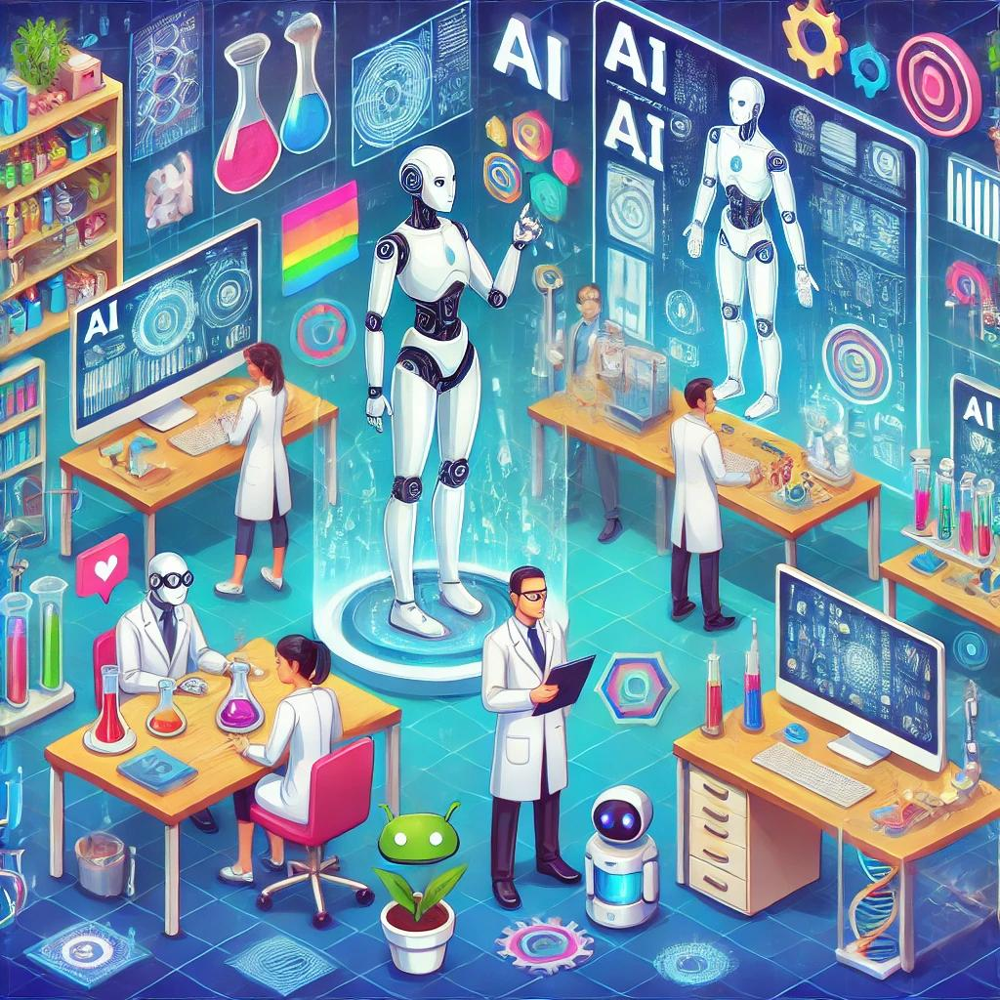
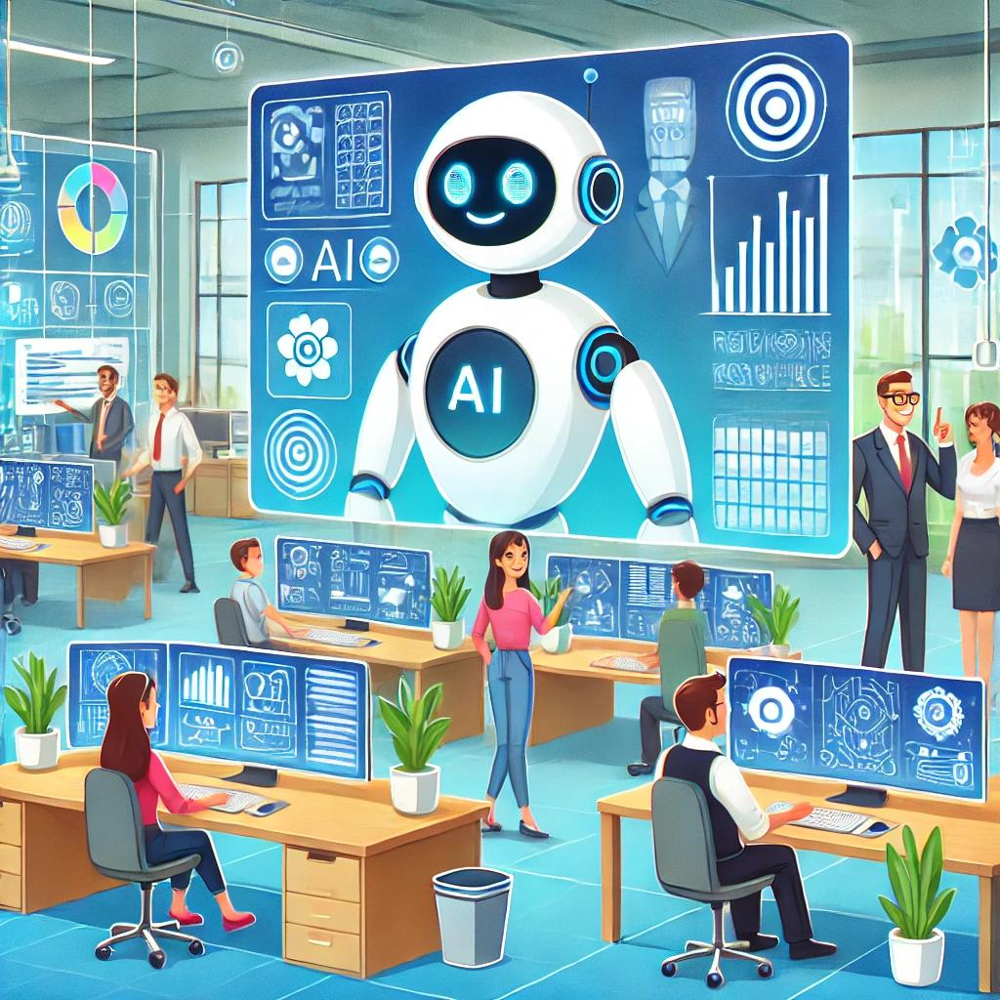
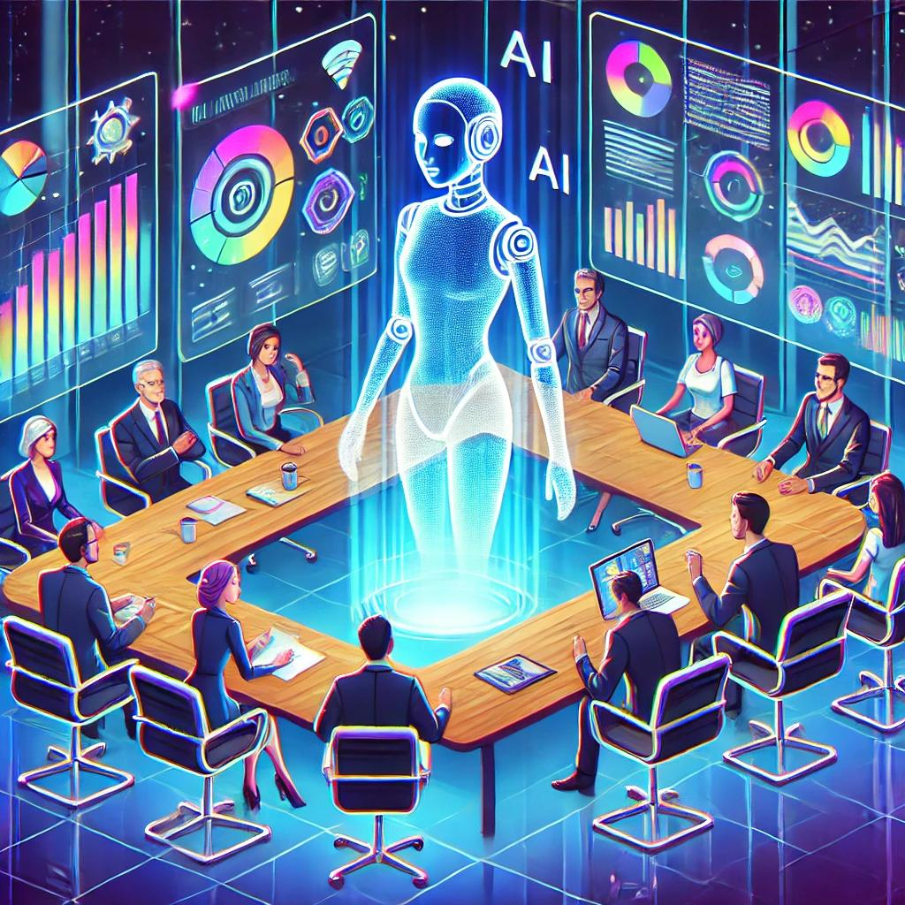
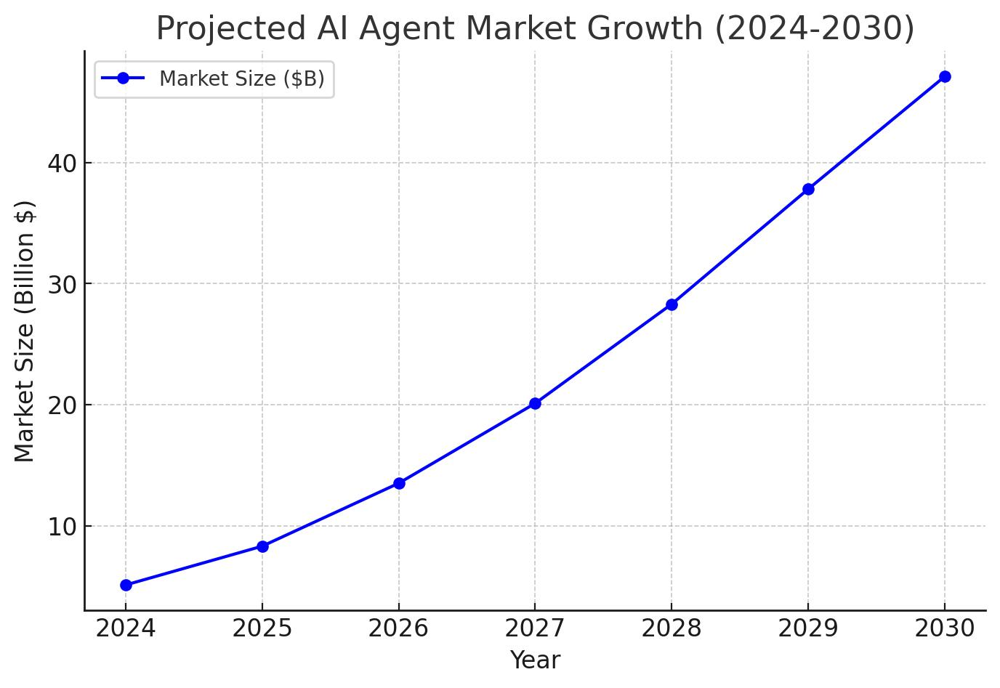

AI Agents: Revolutionizing Business in a Data-Driven Future
Imagine a digital colleague that works 24/7, learns on the fly, and autonomously tackles tasks across your organization. Industry leaders predict this is becoming a reality. OpenAI's CEO Sam Altman expects that "in 2025, we may see the first AI agents 'join the workforce' and materially change the output of companies" . Nvidia's CEO Jensen Huang even calls AI agents "a multitrillion-dollar opportunity" as the market for these agents is projected to grow from about $5.1 billion in 2024 to $47.1 billion by 2030 . For Merclytics – a data-driven company at the forefront of analytics – harnessing AI agents could be a game-changer for efficiency and innovation. This article explores what AI agents are, how they evolved, and how they can transform business operations and decision-making. We'll dive into real-world applications (especially in data analysis and research), future trends and challenges, integration strategies, and the ethical and regulatory considerations of deploying AI agents in business.
What Are AI Agents and How Have They Evolved?
Defining AI Agents: AI agents are essentially intelligent software programs that can perceive their environment, make decisions, and take actions to achieve specific goals with minimal human intervention. In simple terms, an AI agent is an AI-driven system that "uses tools to accomplish goals" and can remember information, utilize AI models, and decide when to access other systems on a user's behalf. Unlike static software, AI agents continuously observe, learn, and adapt. They have the ability to observe, plan, and act autonomously, which means they can analyze data, devise strategies, and execute tasks – all while adjusting to new information or changes in context. This makes them more dynamic and powerful than traditional automated scripts or basic chatbots.
A Brief Evolution: AI agents have come a long way through several waves of AI development. In the 1960s-1980s, early AI programs were largely rule-based – exemplified by expert systems that used hard-coded rules to solve problems (for example, the MYCIN medical diagnosis system). These systems were intelligent in narrow domains but lacked true autonomy or learning. By the 1990s, the concept of "intelligent agents" began taking shape: software agents could operate with a degree of autonomy, such as early virtual assistants that performed simple tasks like filtering emails or scheduling meetings.
The 2000s saw the rise of machine learning in business applications, dramatically improving what AI agents could do. AI became more data-driven – from statistical models to IBM's Watson (which famously beat humans on Jeopardy!) – enabling agents to handle more complex decision-making and natural language understanding. In the 2010s, deep learning took center stage. Advances like deep neural networks and powerful language models (e.g. OpenAI's GPT-3 in 2020) gave AI agents remarkable conversational abilities and pattern-recognition skills. AI agents also started moving into the physical world – think of autonomous robots and self-driving cars making real-time decisions.
Now in the 2020s, we've entered the era of "agentic AI." Modern AI agents are far more autonomous and proactive than their predecessors. They can set longer-term plans, collaborate with other AI agents, and adapt to changing conditions with minimal oversight. In other words, AI agents today don't just respond to commands; they can proactively figure out how to achieve a goal. For example, new multi-agent systems allow specialized agents to work together (one agent might gather data while another analyzes it, coordinated by a "manager" agent). This evolution means AI agents are now capable of driving end-to-end business processes and complex workflows in a way that simply wasn't possible a decade ago.
Enhancing Business Operations, Decision-Making, and Efficiency
AI agents are poised to supercharge business operations by automating routine tasks, providing data-driven insights, and even collaborating in decision-making. Think of these agents as tireless team members that continuously learn and improve. They can observe what's happening in the business, analyze vast datasets or real-time streams, and act on those insights – all at a speed and scale no human team can match.
Automation of Routine Tasks: One of the most immediate benefits is relieving employees from repetitive, mundane tasks. For instance, consider a marketing scenario at a global consumer goods company. Traditionally, preparing weekly marketing reports and recommendations might take a team of analysts an entire week. With an AI agent in place, that same project "once required six analysts per week [but] now [requires] a single employee working with an agent," delivering results in under an hour. This kind of efficiency gain not only cuts cost and time; it also allows human workers to focus on more strategic and creative work.
Data Analysis and Decision Support: AI agents excel at sifting through large volumes of data to surface insights for decision-making. They can ingest data from internal databases, live feeds, or even the web, then apply AI models to detect patterns or anomalies that humans might miss. In essence, an AI agent can function as an ultra-fast analyst or research assistant. For example, agents are now used in R&D and analytics roles – a biopharma company deployed AI agents for drug research and saw a 25% reduction in cycle time, plus a 35% gain in time efficiency when drafting clinical study reports.
Operational Efficiency and 24/7 Workflows: Unlike humans, AI agents don't need breaks. They can monitor processes and execute tasks around the clock. This opens up possibilities for continuous operations. For instance, in IT and operations departments, AI agents can oversee system maintenance, data backups, or anomaly detection without human intervention.
Real-World Applications of AI Agents in Data and Research
- Marketing Analytics & Content Creation: A leading consumer packaged goods company used an AI content agent to generate marketing copy and insights, resulting in a 95% reduction in content creation costs and a 50× increase in speed.
- Customer Service & Support: Global banks and businesses have deployed AI customer-service agents, reducing support costs significantly while maintaining quality.
- Research & Development: In pharmaceutical and biotech R&D, AI agents are accelerating research processes, reducing cycle times and speeding up documentation.
- Human Resources & Recruiting: AI agents are streamlining HR workflows by generating job descriptions and sourcing candidates autonomously.
- Enterprise Data Management: In IT departments, AI agents manage data pipelines, perform ETL tasks, and optimize operations autonomously.
The Future of AI Agents: Trends, Advancements, and Challenges
As we look ahead, AI agents are set to become even more sophisticated and ubiquitous in business. They will become proactive workforce members, capable of long-term planning, handling multi-step tasks, and coordinating with other AI agents. This evolution can lead to smaller human teams working in tandem with multiple AI agents, increasing productivity and unlocking new business models.
Integrating AI Agents into Business for a Competitive Edge
For businesses looking to stay ahead, integrating AI agents is quickly shifting from a cutting-edge idea to a strategic necessity. Companies should start by identifying high-impact use cases, choose the right platform or build a custom solution, pilot and iterate, and train their teams for optimal collaboration with AI. Governance and continuous improvement are crucial to ensure AI agents function responsibly and effectively.
Ethical and Regulatory Considerations for AI Agent Deployment
Deploying AI agents requires a responsible approach. Companies must ensure fairness, transparency, and accountability. It's essential to audit for biases, ensure data privacy, and establish clear oversight mechanisms. Adhering to emerging regulations like the EU AI Act will be critical to building trust and avoiding unintended consequences.
Conclusion
AI agents represent a profound shift in how businesses operate. They promise leaps in productivity, intelligence, and scalability, enabling companies like Merclytics to harness data-driven insights like never before. Embracing this transformation will allow companies to redefine success and maintain a competitive edge in an increasingly agent-driven future.
Sources:
- Boston Consulting Group – "AI Agents: What They Are and Their Business Impact."
- World Wide Technology – "The Evolution of AI Agents: From Simple Programs to Agentic AI."
- Forbes (Thomas Caldwell) – "The Evolution Of AI Agents In The Third Wave Of AI."
- AlphaSense (Sarah Hoffman) – "Will AI Agents Join the Workforce This Year?"
- TechTarget – "Oracle launches over 50 AI Agents for business use."
- IBM Blog (Alice Gomstyn et al.) – "New ethics risks courtesy of AI agents? Researchers are on the case."
- JDSupra (StoneTurn) – "Preparing for the AI Agent Revolution: Legal and Compliance Challenges."
- Securiti – "Navigating the AI Regulatory Maze: A Guide for Businesses in 2024."